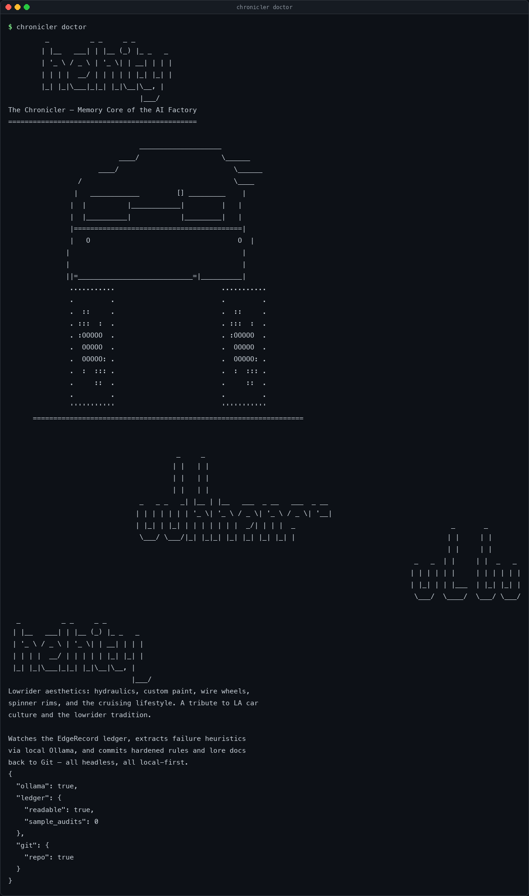

Validated at every boundary.
ExecutionAuditLog, ExtractedHeuristic and DocUpdatePayload as Pydantic models and JSON Schemas.
The memory core of the autonomous AI software factory
The Chronicler watches the EdgeRecord ledger, extracts failure heuristics through local Ollama, and commits hardened rules and lore docs back to Git — headless, local-first, with a path-traversal guard before every write.

chronicler doctor: is the local Ollama reachable, is the ledger readable, and is the target repository a Git repository?01 / Quick start
No cloud inference. No paid fallback. The model is the one you run.
# install pip install the-chronicler # point it at your local ledger and target repo export CHRONICLER_LEDGER_PATH=~/.taskrivet/ledger.sqlite export CHRONICLER_REPO_ROOT=~/Projects/taskrivet # sanity-check the black ops setup chronicler doctor # ingest one batch and commit what it learns chronicler run --once
02 / What it does
Every cycle reports what it read, what it learned and what it committed.
ExecutionAuditLog, ExtractedHeuristic and DocUpdatePayload as Pydantic models and JSON Schemas.
Heuristic ids are derived from the failure category and fingerprint, so the same lesson is not learned twice.
The committer refuses an unsafe path. Push is configurable, and each cycle captures its own commit receipts.
Analysis routes through a local Ollama endpoint. Nothing is sent to a proprietary cloud LLM.